|
Sea ABC un triángulo de lados a=BC,
b =AC y c =AB. Sea, DEF un triángulo
inscrito en ABC, tal que los puntos D, E y F,
estén respectivamente sobre los lados BC, AC y AB.
Si S', es el área de DEF y S es el área
de ABC respectivamente, se pide: |
|
Scheffer, J.( 1881 ) : "On the Ratio
of the Area of a Given Triangle to That of an Inscribed Triangle"
The Analyst, (Nov.) Vol.8 N.6 , pp.173-174
Propuesto por Juan Bosco Romero Márquez. |
Solución de Francisco Javier García Capitán
Usando Mathematica y coordenadas baricéntricas haremos rápido los apartados a) - f), deteniéndonos algo más en el último apartado.
Suponemos que los puntos D, E, F dividen a los segmentos BC, CA, AB en las razones l:1, m:1, n:1. Esto quiere decir que los puntos D, E y F tienen coordenadas baricéntricas
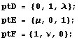
a) Hallar el cociente de las áreas S'/S.
Recordemos que la función AreaTriangulo definida en Baricentricas.nb calcula precisamente este cociente.
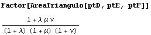
b) ¿Cuánto vale S'/S si las cevianas AD, BE y CF, concurren?
Usando el teorema de Ceva tendremos que lmn =1. Entonces la fórmula del área queda
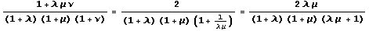
Para los apartados siguientes definimos dos funciones:
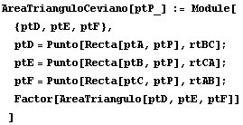
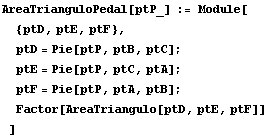
Ahora las aplicamos a los casos particulares planteados:
c) Si D, E y F son los pies de las medianas, S'/S=1/4
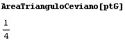
d) Si D, E y F son los pies de las bisectrices interiores, es S'/S= 2abc/((a+b)(a+c)(b+c)).
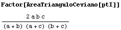
e) Si D, E y F son los pies de las alturas, es: S'/S = ((a2+b2-c2) (a2+c2-b2) (b2+c^2-a^2))/ (4a2 b2 c2)
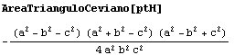
f) Si D, E y F son los pies de las perpendiculares
a los lados desde el centro de la circunferencia inscrita,
S'/S=((a + b -c)
(a+c-b) (b+c-a))/ (4abc)
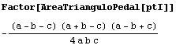
g) Comparar los resultados de f) y e)
Restemos las áreas obtenidas y factoricemos el resultado:
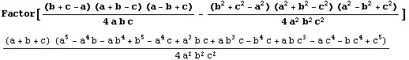
Vamos a demostrar que
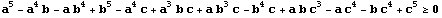
Lo escribimos así:
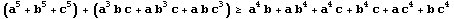
En términos de sumas simétricas (donde los índices recorren las permutaciones de las letras a, b, c)
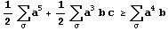
Con la notación de Muirhead, la desigualdad se escribe
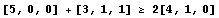
La notación consiste en expresar entre corchetes los exponentes de los sumandos en cada caso.
|
Sobre el teorema de Muirhead. El teorema de Muirhead es muy útil para resolver desigualdades como ésta, en la que intervienen polinomios homogéneos simétricos cuyas variables son los lados de un triángulo. Esto es sólo una pequeña introducción. Para saber más, consultar las referencias siguientes:
Consideremos los símbolos [5,0,0], [3, 1, 1], [4, 1, 1] todos
los con la misma suma y formados por tres números decrecientes..
Decimos que un símbolo [i2, j2, k2]
mayora a otro símbolo [i1, j1, k1]
si El teorema de Muirhead dice que un símbolo mayora a otro si y solo si la desigualdad correspondiente se cumple para todos los valores positivos de las variables y que la iguadad se cumple si y solo si las variables son todas iguales. En nuestro caso se cumpliría que
y esta desigualdad nos es desfavorable. Si fuera [5, 0, 0] >= [3, 1, 1] >= [4, 1, 0] sí podriamos razonar fácilmente que [5,0,0] + [3,1,1] >= [4,1,0] + [4, 1, 0] = 2 [4, 1, 0]. Un método apuntado en [2] es tener en cuenta que a, b, c son los lados de un triángulo, por lo que las cantidades x=b+c-a, y=c+a-b, z=a+b-c son positivas y podemos expresar la desigualdad en términos de ellas. En este caso la transformación require bastante cálculo, pero para eso tenemos a Mathematica:
La expresión del paréntesis puede expresarse en la forma [3,2,0] - [3,1,1], y como [3,2,0] mayora a [3, 1,1] concluimos la que desigualdad es cierta. Por tanto: El área obtenida en f) es siempre mayor o igual que la obtenida en e). |
Rematemos la faena comparando las áreas de los triángulos de los otros apartados:
|
El área obtenida en d) es siempre mayor o igual que la obtenida en f)
Tenemos que demostrar que [4, 1, 0] + [2, 2, 1] >= [3,2,0] + [3,1,1], que como antes no se deduce directamente, ya que aunque [4,1,0] mayora tanto [3,2,0] y [3,1,1], no le ocurre lo mismo a [2,2,1], que no mayora a ninguna de las dos. Hacemos como antes, un cambio de variable,
y, también como antes, ahora si deducimos fácilmente que la expresión del paréntesis es positiva, pues tenemos [3,2,0] >= [2,2,1]. El área obtenida en c) es siempre mayor o igual que la obtenida en d) En este caso la cosa es más fácil ya que si hacemos
obtenemos que el numerador se escribe [2,1,0] - [1,1,1], y claramente es [2,1,0] >= [1,1,1]. Además esta desigualdad es fácil de obtener de una forma elemental, teniendo en cuenta que
y que la última desigualdad se deduce de que 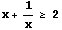 para cualquier número positivo x. |